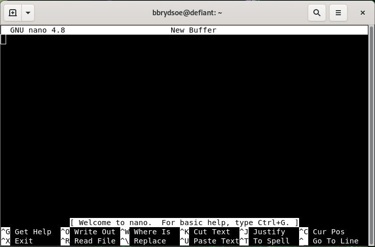

Editors¶
Some editors are more suited for a GUI environment and some are more suited for a command line environment.
Command line¶
These are all good editors for using on the command line:
Of these, vi/vim as well as emacs are probably the most powerful, though the latter is better in a GUI environment. The easiest editor to use if you are not familiar with any of them is nano.
Nano
HINT: code-along!
- Starting “nano”: Type
nanoFILENAME on the command line and pressEnter. FILENAME is whatever you want to call your file. - If FILENAME is a file that already exists,
nanowill open the file. If it dows not exist, it will be created. - You now get an editor that looks like this:

- First thing to notice is that many of the commands are listed at the bottom.
- The ^ before the letter-commands means you should press CTRL and then the letter (while keeping CTRL down).
- Your prompt is in the editor window itself, and you can just type (or copy and paste) the content you want in your file.
- When you want to exit (and possibly save), you press CTRL and then x while holding CTRL down (this is written CTRL-x or ^x).
nanowill ask you if you want to save the content of the buffer to the file. After that it will exit.
There is a manual for nano here.
GUI¶
If you are connecting with ThinLinc, you will be presented with a graphical user interface (GUI). From there you can either open a terminal window/shell (Applications -> System Tools -> MATE Terminal) or you can choose editors from the menu by going to Applications -> Accessories. This gives several editor options, of which these have a graphical interface:
- Text Editor (gedit)
- Pluma - the default editor on the MATE desktop environments (that Thinlinc runs)
- Atom - no t just an editor, but an IDE
- Emacs (GUI)
- NEdit “Nirvana Text Editor”
If you are not familiar with any of these, a good recommendation would be to use Text Editor/gedit.
Text Editor/gedit
- Starting “gedit”: From the menu, choose Applications -> Accessories -> Text Editor.
- You then get a window that looks like this:

- You can open files by clicking “Open” in the top menu.
- Clicking the small green file icon with a green plus will create a new document.
- Save by clicking “Save” in the menu.
- The menu on the top right (the three horizontal lines) gives you several other options, including “Find” and “Find and Replace”.